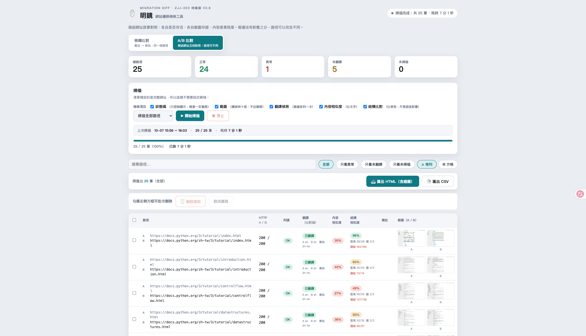
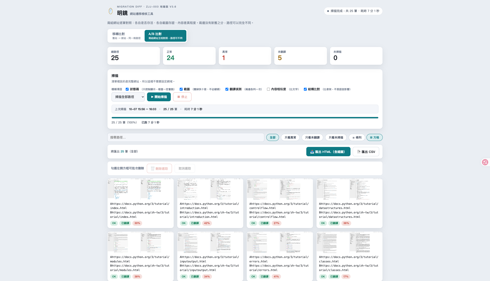
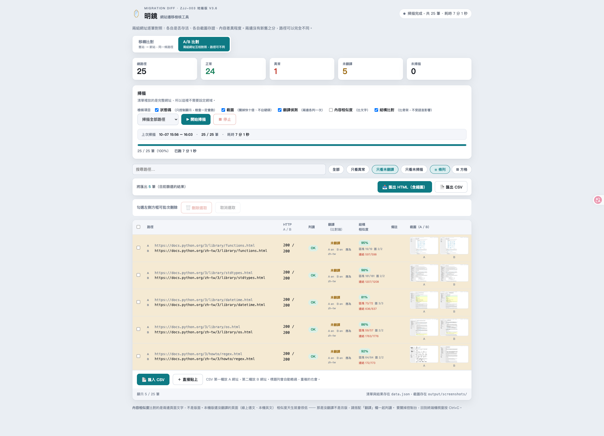
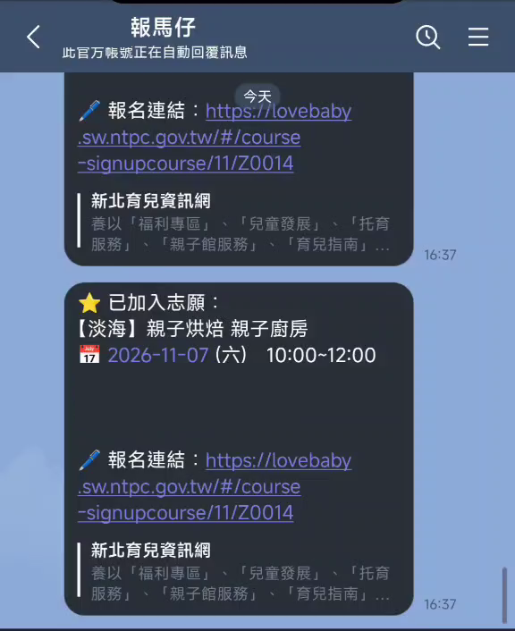
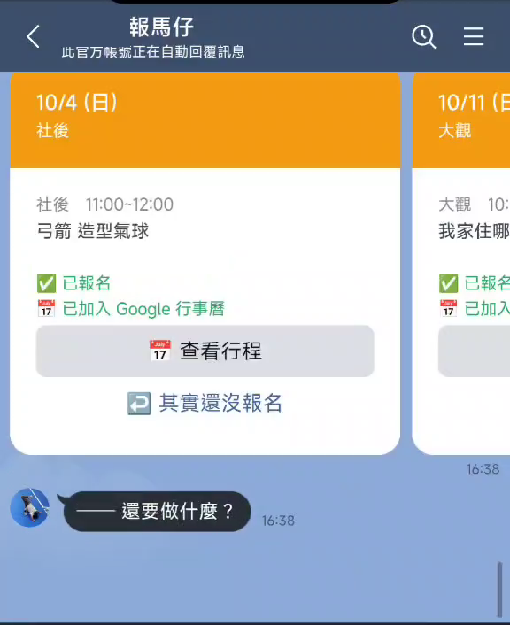
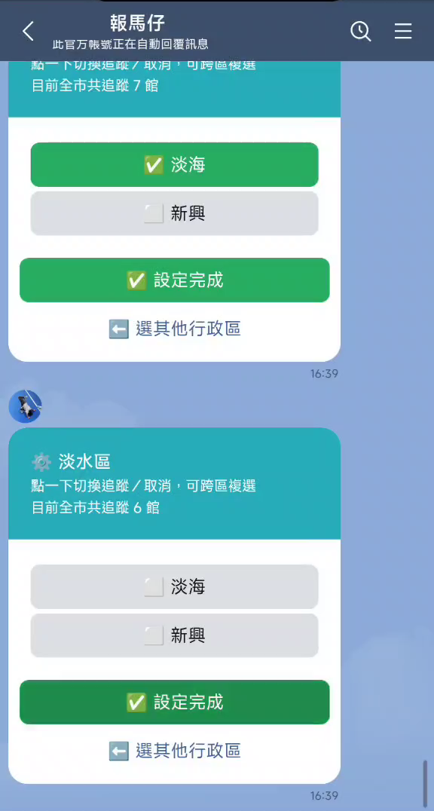

原本
每次網站遷移，靠人一頁一頁比對，漏了也沒有紀錄。
現在
系統跑完整批、留下截圖與時間，人只看被標出來的頁面。
近十年在全球硬體品牌負責歐洲區 15 國、14 種語系的官網營運。下面兩個工具，從需求、判斷邏輯到上線都是我自己發起並完成的。
網站遷移檢核工具。把「有沒有人仔細看」變成可重複、可追溯的流程。
第一個想法
比對兩張截圖的像素，差異大就是版面壞了。
實測後的做法
改比 HTML 骨架：區塊、圖片、標題階層，不看文字。
各國語系的文字長度不同。實測把整頁往下推 20px，像素差異就到 15.4%，跟真正壞版的差異（14.6% 到 41.8%）落在同一個範圍，分不出來。
換成結構比對後，先用對照組確認指標可信：
| 比對對象 | 結構相似度 |
|---|---|
| 同一頁比自己 | 100% |
| 同模板、不同語系 | 85–88% |
| 不同平台的兩個站 | 16% |
前一代跑在 GitHub Actions 上，連不到開發人員電腦裡的測試站。上線前最需要檢查的那一刻，工具反而派不上用場。我查過的幾個視覺比對服務也有同樣的限制。
所以第三代改成地端版：不依賴任何雲端服務，測試站、內部站、正式站都能掃。代價是沒有線上示範可以點，這一頁的畫面都來自本機的實際執行。
截圖是速度瓶頸，所以檢核項目做成可勾選。翻譯偵測在部分語系會誤判，我把那一欄定位成輔助訊號，沒有宣稱它全對。
準備這一頁的示範時，我改拿公開的多語系文件站來掃，才發現原本的設計假設「語系一定寫在網址第一段」，換一個網站就不成立。現在改成優先讀網頁自己宣告的語言，讀不到才退回網址判斷。
同一次示範也看到另一個限制：在文件類網站上，翻譯過的頁面結構相似度會掉到五成上下。這個指標目前只在版型固定的產品頁上準，原因我還在查。
下面的畫面是拿公開的多語系文件站示範：25 組英文與繁體中文頁面，7 分 1 秒掃完。其中 1 組異常是我刻意放進去的不存在網址，用來確認工具會攔下來。
整輪掃描的縮時紀錄，原長約 10 分鐘，這裡以 10 倍速播放。



親子館課程的 LINE 通知機器人。幫家長盯課、推送報名連結，最後一步由人自己按。
上一版的做法
時間一到，替使用者自動送出報名。
這一版的決定
機器只負責盯課與提醒，報名由人按。
代替使用者對公部門系統送出申請，落在服務條款的灰色地帶。搶課等於同一秒集中打對方主機，對公共服務不厚道。拿掉之後，程式不再碰任何憑證，才有辦法公開。
GitHub Actions 每天抓課程，寫成 Google Drive 上的 JSON；Google Apps Script 負責 LINE 訊息、推播與行事曆。兩邊各自獨立，一邊掛掉另一邊照常運作。
目前是個人自用的版本，已經在群組中推播提醒。沒有對外開放有兩個原因：通知內容與行事曆都是個人行程，屬於隱私；發訊息用的是免費額度的官方帳號，撐不住多人使用。要變成公開服務，得先處理每位使用者各自的行事曆授權、資料隔離與訊息費用。能分享的是做法與規格，這部分已經整理成可複製的骨架。



畫面中的個人資訊已遮蔽。
同一種做法，用在別的重複工作上。